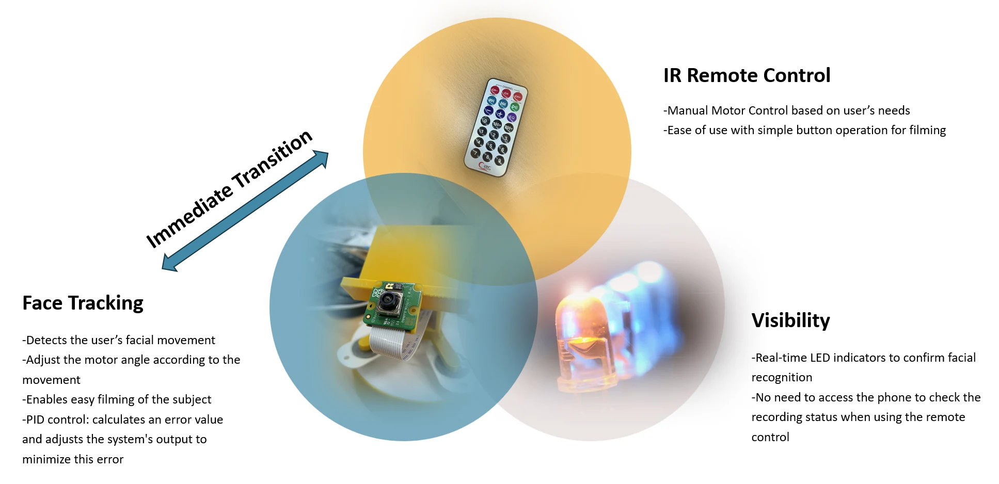

Mechatronics
Automated Filming Device
HD Hyundai Mechatronics Competition · 2024 · Grand Prize
A Raspberry Pi camera mount with automatic face tracking and infrared remote control.

Background and product idea
A solo creator needs to move without continually adjusting the camera. Our prototype keeps the subject in frame with two-axis rotation and provides manual control through an infrared remote.
My contribution
Team member on the filming-device prototype. The hardware, software, and demos below describe the shared team project.
Hardware and software
1. Hardware
A Raspberry Pi connects the camera, two servos, and infrared receiver.
- Pan–tilt mount: Rotate the camera horizontally and vertically with separate servo axes.
- Mechanical support: Use a ball-transfer unit to distribute weight and reduce friction.

2. Pixel error to incremental servo motion
Capture frames with Picamera2, run the Haar-cascade face detector, and select the largest detected face.
- Feedback signal: Measure the selected face center relative to the image center and normalize by image width and height.
- Control law: Multiply each normalized error by a proportional gain of 30 to obtain the incremental servo-angle command.
- Actuation: Add the increment to the current angle, clamp it to the servo limits, and map it to calibrated pulse width.
- Lost detection: Skip automatic updates when no valid face center is available and turn off the detection LED.
e_x = (W/2 − c_x) / W; e_y = (H/2 − c_y) / H
Δθ_pan = 30 e_x; Δθ_tilt = 30 e_y
W and H are image dimensions; c_x and c_y are the face center. The released controller sets both derivative gains to zero.


3. Concurrent remote control and shutdown
Run the LIRC infrared reader in a separate thread alongside the camera loop.
- Mode switch: KEY_0 switches automatic tracking on or off.
- Manual motion: Directional keys start continuous motion on either axis; KEY_5 stops the servos.
- Exit: KEY_9 ends the loop. Reset the camera pose, stop capture, disable servo pulses, and join the remote thread.
Award and demonstration
2024 HD Hyundai Mechatronics Competition.
| Measure | Result |
|---|---|
| HD Hyundai Mechatronics | Grand Prize |
| Pan–tilt motion | 2-axis |
| Team prize | ₩3M |
The videos show device operation and recorded footage. Quantitative tracking-error measurements were not supplied.


Code & implementation references
Shared project photographs and diagrams are reproduced from teammate Seunghun Oh’s project page. Project descriptions are adapted for this joint team project.